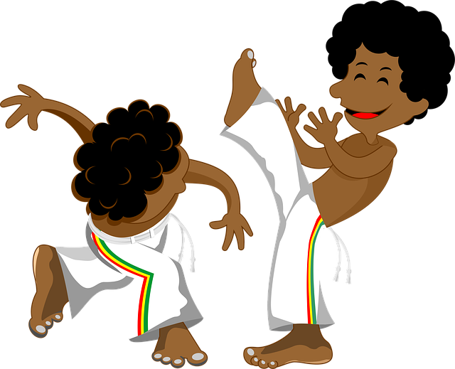

A capoeira é uma expressão cultural brasileira que mistura luta e dança. Atualmente possui três estilos: Capoeira Angola, Capoeira regional, Capoeira Contemporânea.
Capoeira Angola: É o estilo mais antigo da capoeira, caracterizada por ser mais lenta, composta de movimentos furtivos e executados de modo rasteiro. Não existe uma data definida ou uma pessoa a quem se possa atribuir a criação desse estilo.
Os aspectos básicos desse estilo é a malícia e movimentos para enganar os oponentes.
Capoeira regional: Foi criada em 1928 por Manoel do Reis Machado, também conhecido como mestre Bimba. Na tentativa de mudar a visão negativa sobre a capoeira e eliminar a origem marginalizada, aplicou códigos rígidos de ética, mudou alguns movimentos e eliminou a malícia da postura dos praticantes. Teve como inspiração a capoeira angola e o batuque-boi, uma luta de origem africana que também misturava elementos de luta e dança.
